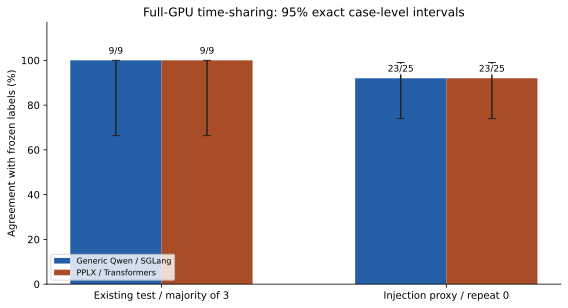
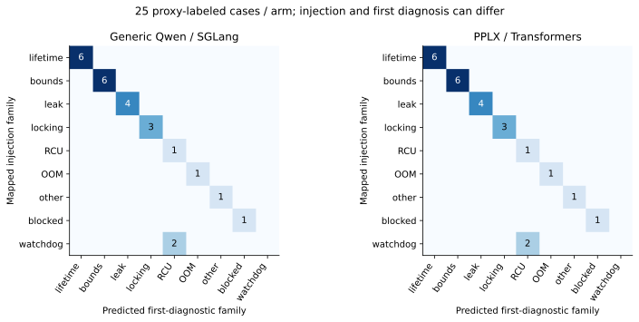
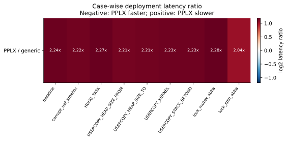

PPLX 全 GPU 分时复用复测报告（2026-10-12）
真实 PPLX v1 专用权重与通用 Qwen 分时使用同一 A100；CPU 卸载旧结果不进入本轮对照分母。
已验证的运行条件
PPLX 全部参数位于 ['cuda:0']，总参数字节 52173271520（48.590 GiB）；device map 为 {'': 'cuda:0'}。没有 CPU/meta 参数。固定 checkpoint revision b01a5cbaca5391f73bd55103d4f27e8982cd5e60。
原通用模型与 PPLX CPU sidecar 在测试时停止；先测 PPLX，再释放显存测通用模型；每阶段都确认另一模型端口及生产30000不响应，并记录GPU快照。两端BF16、相同证据、三个问题、8192上下文、串行客户端；通用实验端关闭radix前缀缓存。PPLX为官方参考Transformers/SDPA，通用为SGLang0.5.21，因此仅移除了CPU卸载/同时驻留差异，运行时、内核、提示与读出仍不同，且顺序没有交叉随机化。
9个既有test案例各3次×2端=54；其他16个映射train案例各1次×2端=32；35个未覆盖案例仅PPLX各1次=35。共121正式调用，另排除2合成预热。未知家族correct=null，未评估源码根因、引入提交或stage/reporter准确率。
结果
| 指标 |
通用 Qwen / 全GPU SGLang |
PPLX / 全GPU参考实现 |
| test调用与标签吻合 |
27/27 |
27/27 |
| test唯一案例多数正确 |
9/9 |
9/9 |
| test平均客户端秒 |
2.563 |
5.672 |
| test P95秒 |
3.093 |
6.891 |
| test API调用数 |
27 |
27 |
| test输入token总数 |
302931 |
325638 |
| test输出token总数 |
0 |
0 |
| 25例注入标签代理吻合 |
23/25 |
23/25 |




统计与解释
9个唯一test案例取各自3次均值，再做配对。通用减PPLX平均差 -3.110s；案例bootstrap95%区间 [-3.472, -2.724]s；探索性双侧案例符号置换p=0.003906。均值相对减少率（负值表示PPLX更慢）-121.35%。重复调用不作为27个独立样本；这些统计不消除运行时/顺序混杂，也不是跨机制显著性或模型本征速度证明。
准确率配对McNemar p=1.000000，非劣/等效未证明。既有test参与开发，不是新机制盲测。25例概率Brier仅对注入代理：通用 0.1580，PPLX 0.1539；不能声称内核领域已校准。
标签、泄露与失败
正式失败 0；121个匿名隔离审计均通过，121个实际请求无额外标签/案例ID/评分字段。仍有63个请求、41个唯一案例含与案例名重合的自然日志符号，存在捷径，不能称完全去线索盲测。
注入watchdog的LOOP/SOFTLOCKUP第一诊断为RCU stall；映射目标与提问构念不同。冻结目标不事后重标，返回RCU不能自动算作模型错误。未覆盖35例保留输出但不报准确率。
首次启动尝试因记录代码读取不存在的hf_device_map属性失败，0正式调用；已保留该尝试及恢复记录，修复后另起新协议目录。当前最终状态 completed，原模型与CPU sidecar恢复检查 True，Supervisor状态 S。
实际结论
PPLX已在完整GPU驻留条件下取得本轮数据，平均5.672s；通用部署本轮平均2.563s。两者家族成绩分别27/27与27/27。此前CPU卸载19.455s不再用于公平速度比较；它只描述另一部署条件。
完整Agent的根因定位收益仍未测试。若研究目标是纯权重/架构收益，应进一步统一支持专用readout的运行时及核函数，并做AB/BA交叉顺序、独立机制与专家首诊断真值验证。当前数据支持已测部署方案在已知案例上的表现，不能外推至未经测试的配置。
保存与复现
私有原始归档 624383 字节、536 个证据文件，SHA256 1e6e699a0bd6fac1b456e71fa51815920300e44f7623151f417a1cc1da6a83b3；归档及逐文件哈希在本地复核一致。排除原进程环境、账号、权重与临时制备副本。恢复后两个Decision端点合成UAF家族验收通过；Chat仅验证HTTP200和可返回，不验证生成内容。恢复验收不计入121正式调用。
公开 results/trials.csv/json 包含121次标量、三个问题的选择与概率，完整输入/原始轨迹仅保留私有归档。运行 python analyze.py --public 可离线重算本报告与科研图，不调用模型。服务器 /opt/kernel-insight/experiments/pplx-timeshare-20261012/；首次失败尝试在相邻20261011目录。恢复与阶段快照、全GPU参数设备断言均可追溯。
分析计划与相关案例敏感性
运行协议、输入与顺序在正式调用前冻结；本分析脚本在采集期间编写，统计属于探索性。按5个注入家族分别取案例差值均值，再对家族等权符号置换，p=0.062500。家族也不等于经过因果验证的独立机制；案例级区间不能被解读为任意新故障的总体区间。